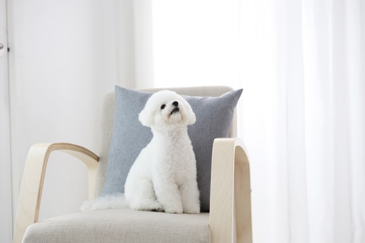

강아지와 지내다 보면 사람만큼이나 다양한 감정을 느끼고 교감하는 걸 알 수 있지요. 심지어 어떤 다양한 이유들 때문에 상처받거나 우울감을 느끼는 강아지들도 있습니다.

강아지의 수명은 10여 년이 넘기 때문에 강아지를 키우다 보면 결혼, 임신, 유학 등 사람에게도 다양한 변화가 일어나게 됩니다. 결혼으로 인해서 환경이 바뀌는 것은 물론 가족 구성원의 변화도 생기게 되는데요, 강아지가 잘 적응할 수 있도록 조금 더 관심을 기울여주세요:) 가족이 집에서 빠져나가게 되면 아이도 허전함을 느끼게 되고, 함께 이사하는 경우라면 낯선 상황에 긴장하고 불안해할 수 있답니다.

강아지와 아기를 함께 키우는 것은 아기의 면역력이나 정서에도 도움이 된다고 하죠? 하지만 아기가 태어났을 때 모든 가족이 강아지에게 너무 무관심해지고 아기에게 관심이 쏠리면 무관심으로 인한 강아지 우울증이 나타날 수 있어요. 강아지와 아기를 아예 분리시키고 아기만 돌보는 경우도 있는데, 이렇게 되면 강아지는 아기에게 관심을 빼앗겼다고 생각하게 됩니다. 가능하면 같은 공간에서 강아지가 아이와 가족들을 볼 수 있게 해주고, 접촉이 불안하다면 아이가 있는 방에 울타리를 둘러주는 것만으로도 강아지는 자신이 가족들과 함께하고 있다고 느낄 수 있어요. 강아지에게 아기의 존재를 차근차근 알려주고 친해질 수 있도록 도와주세요. ^^

집에 혼자 있는 시간이 너무 긴 강아지들은 하루종일 반려인을 기다리다가 스트레스를 받거나 우울해하기도 합니다. 가능한 자주 산책하면서 교감하는 시간을 가져주세요. 반려인과 떨어지면 불안하고 초조해하는 분리불안을 심하게 느끼는 경우도 있는데요, 반려인의 외출을 강아지가 너무 심각하게 느끼지 않도록 훈련을 할 필요도 있습니다. 외출하고 돌아와서 반기는 강아지에게 너무 격렬하게 반응을 보여주지 말고 오히려 모른 척을 하다가 강아지가 진정되고 나서 예뻐해주시는 게 좋아요. 나갔다 온 일이 특별한 게 아니라 아무 일도 아니라는 듯이요:)
